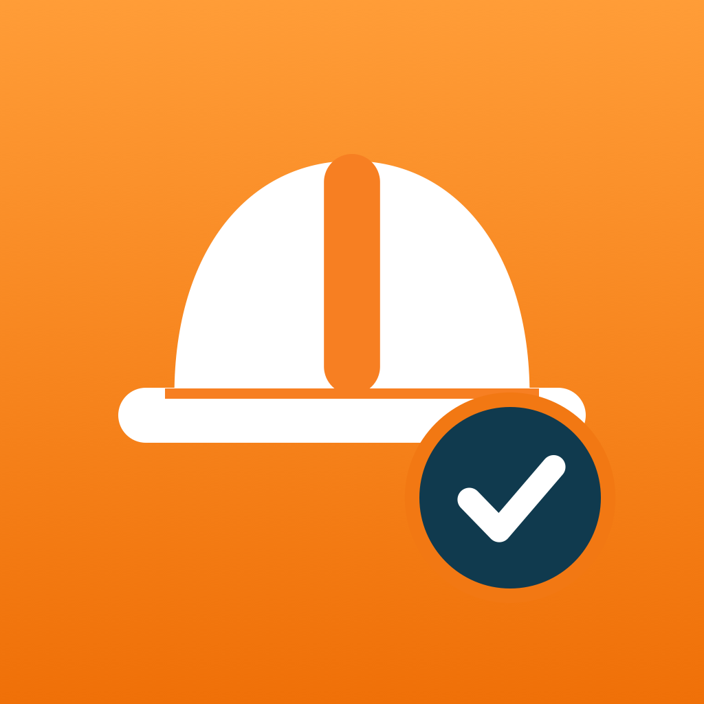

Prevenobra es la libreta de visitas del coordinador de seguridad y salud en obras de construcción: listas de comprobación basadas en el Real Decreto 1627/1997 y normas complementarias, deficiencias con foto y seguimiento hasta que se corrigen, registro interno de incidentes y acta de la visita en PDF. Funciona sin conexión y sin cuenta. ¿Necesitas ayuda? Escribe a jmillacatalan@gmail.com.
¿Sustituye al libro de incidencias? No. El libro de incidencias es un libro físico, con hojas por duplicado, que facilita el colegio profesional o la oficina de supervisión de proyectos y que debe estar siempre en la obra (RD 1627/1997, art. 13). Las anotaciones oficiales se hacen en él. Prevenobra es una herramienta de apoyo para preparar y documentar tus visitas.
¿Garantiza el cumplimiento de la normativa? No. Las listas son preguntas de comprobación redactadas a partir del texto consolidado del BOE; no sustituyen su lectura ni el criterio del técnico competente, el plan de seguridad y salud o la documentación preventiva de la obra. Cada punto indica la disposición de la que procede y la sección Normativa de la app enlaza los textos del BOE.
¿Qué es gratis y qué incluye Prevenobra Pro? La versión gratuita incluye una obra, con visitas, deficiencias, incidentes, las doce listas de comprobación y actas en PDF ilimitadas. Prevenobra Pro es una suscripción (4,99 € al mes o 34,99 € al año) que añade obras ilimitadas, plantillas propias y tu logotipo y firma en el acta.
¿Qué pasa con mis datos si dejo de estar suscrito? Nada se borra. Tus obras, deficiencias, fotos y actas siguen disponibles y exportables. Solo se bloquea crear obras nuevas por encima del límite gratuito y editar plantillas propias.
¿Cómo cancelo o restauro la suscripción? Se gestiona en los ajustes de tu ID de Apple (Suscripciones). Para restaurarla: Ajustes > Restaurar compras, o en la pantalla de Prevenobra Pro.
¿Dónde se guardan las obras y las fotos? Solo en tu iPhone. No hay cuenta ni servidores. Si borras la app se pierden: guarda en otro lugar los PDF que necesites conservar.
¿Cómo comparto el acta? Cierra la visita, abre el acta y usa el botón de compartir. El PDF se genera en el iPhone y solo sale de él si tú lo compartes.
¿Cuándo debo remitir una anotación a la Inspección de Trabajo? Según el art. 13.4 del RD 1627/1997, cuando una anotación del libro de incidencias se refiere a un incumplimiento de advertencias anteriores o a una paralización, hay que remitir copia a la Inspección de Trabajo y Seguridad Social en 24 horas. Prevenobra te lo recuerda, pero no hace el envío.
Prevenobra is a site visit notebook for construction health and safety coordinators in Spain: checklists written from Royal Decree 1627/1997 and related rules, deficiencies with photos followed until corrected, an internal incident record and a PDF visit report. The app is in Spanish, works offline and needs no account. It does not replace the official incident book or the site's safety plan and does not guarantee legal compliance. The free version includes one site; Prevenobra Pro is an auto-renewing subscription (4.99 EUR per month or 34.99 EUR per year) for unlimited sites, your own templates and your logo and signature on reports. Your data never leaves your iPhone. Manage or cancel the subscription in your Apple ID settings; Restore purchases is in Settings. Contact: jmillacatalan@gmail.com.
Última actualización / Last updated: 22 de noviembre de 2026 / 22 November 2026. Desarrollador / Developer: Jordi Milla Catalan. Contacto / Contact: jmillacatalan@gmail.com